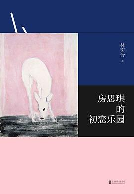

房思琪的初恋乐园

总体观点
《房思琪的初恋乐园》是台湾青年作家林奕含于2017年出版的唯一一部长篇小说，出版后不久作者自缢离世，在整个华人世界引发了空前持久的反思性暴力、权势诱奸与教育庇护体制的社会海啸。这部作品以无与伦比的文学造诣与极度残酷的解剖手术刀，推开了社会长期闭口不谈的幽暗大门。
作品最令人惊心动魄的核心命题在于：‘文学是否只是一种巧言令色的伪饰？艺术是否能够与巧取豪夺的罪恶共存？’施害者李国华是一位道貌岸然、满口《古文观止》与中国古典诗词的名牌补习班名师，他用文学的至美辞藻作为捕兽夹，对十三岁的少女房思琪实施长达数年的性剥削。为了在无法逃脱的噩梦中维持精神不崩溃，房思琪不得不强迫自己催眠‘爱上李老师’——因为如果承认那是纯粹的强暴，自己的灵魂就会瞬间瓦解。林奕含用如同精工刺绣般华丽稠密的文字书写最深重的溃烂，留下了对人类良知最沉痛的终极质问。
核心观点
-
1. 修辞作为暴力捕兽夹：文学美的堕落与背叛
当崇高的文化资本与经典诗词被施暴者用作诱骗与压迫弱小的工具，文学便沦为了最邪恶的共犯与遮羞布。
李国华在施暴时将胡兰成《今生今世》和李商隐诗词挂在嘴边，把下流的兽行粉饰为‘这是老师爱你、是知音相惜’的崇高雅事。 -
2. 向施暴者认同的心理防卫：不得不爱的自我催眠
受创幼小个体在无法反抗、无处求助的绝境中，为了防止自我意识彻底崩盘，被迫用‘我爱他’的幻觉来抵御屈辱。
思琪在日记中写道：‘只要我承认自己爱上了李老师，那这一切就不是强暴，而是爱情；但这种爱是把灵魂一片片撕碎吞下。’ -
3. 世俗家庭性教育的彻底缺位与受害者自责陷阱
社会对性话题的道德羞耻与盲目回避，切断了受创少女向父母求助的生路，反而将施害者保护在绝对安全网中。
思琪在饭桌上试探性地提到‘听说学校有老师在和女学生谈恋爱’，母亲立刻鄙夷斥责‘那是女孩子不知检点’，彻底堵死了求生大门。 -
4. 双生视角的幸存者创伤：刘怡婷的余生重负
未能挽救挚友的幸存者，将带着永恒的负罪感在阳光下生活，背负起将黑暗真相公之于众的残酷历史使命。
挚友刘怡婷面对精神失常、连自己名字都记不得的房思琪，泪流满面立誓要把思琪用血肉写成的日记带到世人面前接受审判。 -
5. 文字的以身殉道：向世界的最后悲怆质问
作者以生命为代价完成这部作品，不是为了展览伤痛博取眼球，而是以决绝的姿态警示世人切勿让悲剧重演。
林奕含在访谈中沉痛发问：‘一个真正懂得美的人，怎么能够同时做出如此丑恶卑劣的事情？’这个问题永远叩击着文明良知。
全书结构
-
乐园的落成：十三岁文学少女与名师相逢
介绍台北高级住宅区纯真烂漫的房思琪与刘怡婷，二人热爱文学，隔壁楼的明星补习名师李国华提出免费辅导作文。
李国华送给思琪一整套精装古典文学书籍，在咖啡馆里高谈阔论红楼梦，少女思琪满怀崇拜地踏入所谓的文学殿堂。 -
噩梦降临：公寓暗室里的初次暴行与撕裂
李国华借口借书将思琪诱骗至其私人公寓，实施残暴性侵，用文学话术与道德威逼将少女的自尊彻底碾得粉碎。
思琪被推倒在沙发上惊恐痛哭，李国华一边解开皮带一边微笑着说‘这是老师对你的初恋，你要引以为傲’，乐园瞬间化为地狱。 -
初恋的伪饰：漫长数年的屈辱囚禁与精神解离
长达数年的性剥削，思琪在学校与家庭之间戴上面具强颜欢笑，内心分裂为两个自我，肉体与精神在创伤中迅速腐烂。
思琪在课堂上机械地记笔记，手腕上满是自残的刀痕，必须靠大剂量抗抑郁药物才能压制住不断干呕的生理恐惧。 -
伊纹姐姐的镜像救赎与家庭暴力的深渊
引入邻居美丽优雅的伊纹姐姐，看似嫁入豪门幸福美满，暗中却遭受丈夫惨无人道的家庭暴力，成为思琪灵魂的同盟与慰藉。
伊纹被打得满身淤青在深夜逃到思琪房间，两个受创的灵魂在黑暗中紧紧相拥，在苦难中照见彼此被摧残的破碎命运。 -
精神的崩塌与幸存者的永远守望
考上大学的思琪终于无法承受认知失调与创伤重压，彻底精神崩溃陷入疯狂；怡婷整理日记，在泪水中向世界立誓。
思琪在精神病院病房里赤脚跳舞、胡言乱语，怡婷手捧沉甸甸的手稿走出大门，向着冷酷的世界发出不可磨灭的真理呐喊。